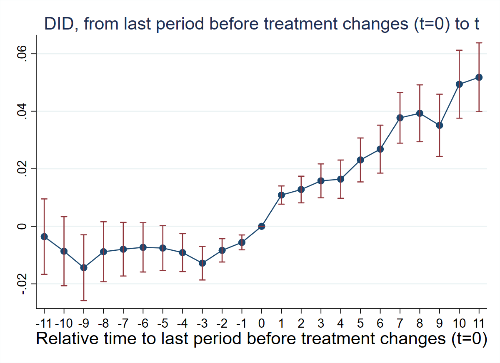

1 Chapter 9: Applied Examples with did_multiplegt_dyn
1.1 Overview
This chapter replicates the four applied examples from de Chaisemartin et al. (2025), using did_multiplegt_dyn on real datasets to estimate event-study effects in complex treatment designs.
| # | Paper | Treatment Type |
|---|---|---|
| 9.1 | Deryugina (2017) | Binary, on-and-off |
| 9.2 | East et al. (2023) | Continuous, absorbing |
| 9.3 | Gentzkow et al. (2011) | Discrete multivalued, on-and-off |
| 9.4 | Hollingsworth et al. (2022) | Two consecutive binary absorbing |
1.2 Example 9.1: Deryugina (2017) — Hurricane Hits and Government Transfers
Research Question: How do hurricanes affect non-disaster government transfer programs in the United States?
Data: County-year panel. Treatment hurricane is binary and non-absorbing (counties are treated for at most one year — a “one-shot” design). Outcome: log_curr_trans_ind_gov_pc (log non-disaster government transfers per capita).
1.2.1 T1: Verify One-Shot Design
use "Deryugina_2017.dta", clear
egen total_hurricane = total(hurricane), by(county_fips)
sum total_hurricane Variable | Obs Mean Std. dev. Min Max
-------------+---------------------------------------------------------
total_hurr~e | 49,698 .3163709 .4650642 0 1All counties have total_hurricane ∈ {0, 1} — confirming the one-shot design.
1.2.2 T2: Non-Normalized Event-Study Effects (No Controls)
did_multiplegt_dyn log_curr_trans_ind_gov_pc county_fips year hurricane, ///
effects(11) placebo(11) cluster(county_fips)
graph export "ch09_fig1_hurricane_nocontrols.png", replace width(1200)--------------------------------------------------------------------------------
Estimation of treatment effects: Event-study effects
--------------------------------------------------------------------------------
| Estimate SE LB CI UB CI N Switchers
-------------+------------------------------------------------------------------
Effect_1 | .0108629 .001617 .0076937 .0140321 14240 361
Effect_2 | .0127918 .0023651 .0081563 .0174273 13953 361
Effect_3 | .0158005 .0030075 .0099059 .021695 13766 361
Effect_4 | .0163886 .003393 .0097385 .0230388 13620 361
Effect_5 | .0230699 .0038968 .0154322 .0307076 13462 361
Effect_6 | .0268285 .0042508 .0184972 .0351598 13253 361
Effect_7 | .0377147 .0044926 .0289095 .04652 13038 361
Effect_8 | .0392922 .0050394 .0294151 .0491694 12929 361
Effect_9 | .035109 .0055185 .0242929 .0459251 12840 361
Effect_10 | .0494016 .006029 .0375849 .0612182 12741 361
Effect_11 | .0518123 .0061055 .0398457 .0637788 12619 361
--------------------------------------------------------------------------------
Test of joint nullity of the effects : p-value = 0
--------------------------------------------------------------------------------
Average cumulative (total) effect per treatment unit
--------------------------------------------------------------------------------
Av_tot_eff | .3190721 .0406001 .2394973 .3986468 31470 3971
Average number of time periods over which a treatment's effect is accumulated = 11
--------------------------------------------------------------------------------
Testing the parallel trends and no anticipation assumptions
--------------------------------------------------------------------------------
| Estimate SE LB CI UB CI N Switchers
-------------+------------------------------------------------------------------
Placebo_1 | -.0055903 .0013173 -.008172 -.0030085 14154 361
Placebo_2 | -.0083554 .0020689 -.0124104 -.0043003 13826 361
Placebo_3 | -.0128183 .002977 -.0186532 -.0069834 13567 361
Placebo_4 | -.009143 .0033686 -.0157454 -.0025406 13302 361
Placebo_5 | -.0075546 .0039816 -.0153585 .0002493 13005 361
Placebo_6 | -.0073115 .0043748 -.015886 .001263 12682 361
Placebo_7 | -.0079583 .0047566 -.0172812 .0013645 12431 361
Placebo_8 | -.008841 .0053184 -.0192648 .0015829 12214 361
Placebo_9 | -.0143816 .0058363 -.0258204 -.0029427 11829 361
Placebo_10 | -.0086498 .0061281 -.0206606 .0033611 10807 299
Placebo_11 | -.0035924 .0066904 -.0167053 .0095206 10012 282
--------------------------------------------------------------------------------
Test of joint nullity of the placebos : p-value = 1.517e-06
Interpretation: Effects are positive and increasing — hurricanes raise non-disaster transfers by ~1% in the short run and ~5% in the long run. However, the pre-trend test is highly significant (p = 1.5e-06), suggesting a differential trend starting ~4 periods before treatment. The parallel-trends assumption is likely violated without controls.
1.2.3 T3: Non-Normalized Event-Study Effects (With County-Level Controls)
local vars coastal land_area1970 log_pop1969 frac_young1969 frac_old1969 ///
frac_black1969 log_wage_pc1969 emp_rate1969
local controls
foreach v of local vars {
gen `v'_year = `v' * year
local controls `controls' `v'_year
}
did_multiplegt_dyn log_curr_trans_ind_gov_pc county_fips year hurricane, ///
effects(11) placebo(11) cluster(county_fips) controls(`controls')
graph export "ch09_fig2_hurricane_controls.png", replace width(1200)--------------------------------------------------------------------------------
Estimation of treatment effects: Event-study effects
--------------------------------------------------------------------------------
| Estimate SE LB CI UB CI N Switchers
-------------+------------------------------------------------------------------
Effect_1 | .0092419 .0015835 .0061383 .0123456 14077 361
Effect_2 | .0095925 .0022712 .0051409 .0140441 13794 361
Effect_3 | .0109771 .0028662 .0053594 .0165948 13609 361
Effect_4 | .0097365 .0032466 .0033733 .0160998 13464 361
Effect_5 | .0144296 .0037154 .0071476 .0217116 13305 361
Effect_6 | .0164425 .0040354 .0085333 .0243517 13097 361
Effect_7 | .0254598 .0042959 .0170399 .0338797 12884 361
Effect_8 | .0251647 .0048611 .0156371 .0346923 12775 361
Effect_9 | .0192179 .0053476 .0087368 .0296989 12685 361
Effect_10 | .031657 .0058645 .0201628 .0431512 12587 361
Effect_11 | .0317402 .0059652 .0200487 .0434317 12465 361
--------------------------------------------------------------------------------
Test of joint nullity of the effects : p-value = 0
--------------------------------------------------------------------------------
Average cumulative (total) effect per treatment unit
--------------------------------------------------------------------------------
Av_tot_eff | .2036597 .038535 .1281326 .2791869 31123 3971
Average number of time periods over which a treatment's effect is accumulated = 11
--------------------------------------------------------------------------------
Testing the parallel trends and no anticipation assumptions
--------------------------------------------------------------------------------
| Estimate SE LB CI UB CI N Switchers
-------------+------------------------------------------------------------------
Placebo_1 | -.0039173 .0013091 -.006483 -.0013515 14000 361
Placebo_2 | -.0051001 .0020352 -.009089 -.0011111 13679 361
Placebo_3 | -.0077511 .0029252 -.0134844 -.0020179 13430 361
Placebo_4 | -.0024941 .003301 -.0089639 .0039757 13181 361
Placebo_5 | .0011302 .00376 -.0062391 .0084996 12893 361
Placebo_6 | .003105 .0040325 -.0047987 .0110086 12577 361
Placebo_7 | .004438 .0043775 -.0041417 .0130177 12337 361
Placebo_8 | .0054782 .0048862 -.0040986 .0150551 12126 361
Placebo_9 | .0018036 .0052736 -.0085325 .0121397 11749 361
Placebo_10 | .0102888 .0056563 -.0007973 .0213749 10734 299
Placebo_11 | .0177286 .0060115 .0059462 .029511 9948 282
--------------------------------------------------------------------------------
Test of joint nullity of the placebos : p-value = 3.280e-07
Interpretation: After including controls, effects remain positive and significant. Pre-trends improve but the joint test is still significant (p = 3.3e-07), suggesting the differential trend starting ~4 periods before treatment persists even after conditioning on covariates.
1.3 Example 9.2: East et al. (2023) — Prenatal Medicaid and Low Birth Weight
Research Question: How does prenatal Medicaid expansion affect the share of low-birth-weight (LBW) infants?
Data: State-year panel. Treatment newsimeli is the simulated prenatal Medicaid eligibility rate — continuous and absorbing (each state changes at most once). Outcome: lbw_detrend81 (% LBW infants, net of state-specific pre-treatment linear trend).
1.3.1 T4: Verify Continuous Treatment in Period 1
tab newsimeli if dob_y_p == 1975 newsimeli | Freq. Percent Cum.
------------+-----------------------------------
.0427696 | 1 2.00 2.00
.0435282 | 1 2.00 4.00
...
.2127634 | 1 2.00 100.00
------------+-----------------------------------
Total | 50 100.00All 50 states have different values of newsimeli in 1975 — confirming the treatment is continuously distributed in period 1.
1.3.2 T5: Non-Normalized Event-Study Effects
global stcontrols stmarried stblack stother sthsdrop ///
sthsgrad stsomecoll pop0_4 pop5_17 pop18_24 pop25_44 ///
pop45_64 urate incpc maxafdc abortconsent abortmedr
did_multiplegt_dyn lbw_detrend81 plborn dob_y_p newsimeli, ///
effects(5) placebo(5) continuous(1) ///
controls($stcontrols) weight(births) effects_equal("all")
graph export "ch09_fig3_medicaid_nonnorm.png", replace width(1200)--------------------------------------------------------------------------------
Estimation of treatment effects: Event-study effects
--------------------------------------------------------------------------------
| Estimate SE LB CI UB CI N Switchers
-------------+------------------------------------------------------------------
Effect_1 | -.0947772 .0431779 -.1794043 -.0101501 234 28
Effect_2 | -.1357354 .0479484 -.2297126 -.0417581 209 28
Effect_3 | -.2164912 .0589289 -.3319896 -.1009928 187 28
Effect_4 | -.2399434 .0807875 -.398284 -.0816028 176 28
Effect_5 | -.2865485 .0995835 -.4817286 -.0913684 138 21
--------------------------------------------------------------------------------
Test of joint nullity of the effects : p-value = .01356529
Test of equality of the effects : p-value = .18570771
--------------------------------------------------------------------------------
Average cumulative (total) effect per treatment unit
--------------------------------------------------------------------------------
Av_tot_eff | -2.674364 .7711151 -4.185722 -1.163007 405 133
Average number of time periods over which a treatment's effect is accumulated = 2.8379
--------------------------------------------------------------------------------
Testing the parallel trends and no anticipation assumptions
--------------------------------------------------------------------------------
| Estimate SE LB CI UB CI N Switchers
-------------+------------------------------------------------------------------
Placebo_1 | -.0333622 .0322533 -.0965775 .029853 234 28
Placebo_2 | -.0162464 .0338256 -.0825434 .0500506 209 28
Placebo_3 | .0125248 .0473315 -.0802431 .1052928 187 28
Placebo_4 | -.0064571 .0475258 -.0996058 .0866917 176 28
Placebo_5 | -.0608374 .0480836 -.1550795 .0334047 106 18
--------------------------------------------------------------------------------
Test of joint nullity of the placebos : p-value = .72098785
Interpretation: A large increase in prenatal Medicaid eligibility significantly reduces the LBW rate. Effects grow with exposure length (from −0.09 to −0.29). Pre-trends are small and jointly insignificant (p = 0.72), supporting the parallel-trends assumption.
1.3.3 T6: Normalized Event-Study Effects
did_multiplegt_dyn lbw_detrend81 plborn dob_y_p newsimeli, ///
effects(5) placebo(5) continuous(1) ///
controls($stcontrols) weight(births) normalized normalized_weights ///
effects_equal("all")
graph export "ch09_fig4_medicaid_norm.png", replace width(1200)--------------------------------------------------------------------------------
Estimation of treatment effects: Event-study effects
--------------------------------------------------------------------------------
| Estimate SE LB CI UB CI N Switchers
-------------+------------------------------------------------------------------
Effect_1 | -1.298867 .5917281 -2.458633 -.1391013 234 28
Effect_2 | -.9288246 .3281068 -1.571902 -.2857471 209 28
Effect_3 | -.9876244 .2688312 -1.514524 -.4607251 187 28
Effect_4 | -.8192267 .2758287 -1.359841 -.2786122 176 28
Effect_5 | -1.122649 .3901516 -1.887333 -.3579662 138 21
--------------------------------------------------------------------------------
Test of joint nullity of the effects : p-value = .01356528
Test of equality of the effects : p-value = .58100394
----------------------------------------------------------------------
Weights on treatment lags
----------------------------------------------------------------------
| ℓ=1 ℓ=2 ℓ=3 ℓ=4 ℓ=5
-------------+-------------------------------------------------------
k=0 | 1.0000 0.5000 0.3333 0.2500 0.2000
k=1 | . 0.5000 0.3333 0.2500 0.2000
k=2 | . . 0.3333 0.2500 0.2000
k=3 | . . . 0.2500 0.2000
k=4 | . . . . 0.2000
-------------+-------------------------------------------------------
Total | 1.0000 1.0000 1.0000 1.0000 1.0000
Interpretation: A 1 percentage point increase in prenatal Medicaid eligibility reduces the LBW rate by ~1 percentage point. The weights table shows that Effect_1 captures only the contemporaneous effect, while Effect_2 onwards are equal-weighted averages of current and lagged eligibility rates.
1.4 Example 9.3: Gentzkow et al. (2011) — Newspapers and Voter Turnout
Research Question: What is the effect of daily newspapers on presidential voter turnout?
Data: Imbalanced panel of 1,195 US counties, presidential election years 1868–1928. Treatment numdailies (number of daily newspapers) is discrete multivalued and on-and-off. Outcome: prestout (voter turnout rate).
1.4.1 T7: Verify Treatment Design
xtset cnty90 year
bysort cnty90 (year): gen first_numdailies = numdailies[1]
tab first_numdailiesfirst_numdailies | Freq. Percent
-----------------+-----------------
0 | 13,264 78.62
1 | 1,113 6.60
2 | 1,332 7.89
... | ... ...
33 | 16 0.09
-----------------+-----------------
Total | 16,872 100.00gen d_numdailies = .
bysort cnty90 (year): replace d_numdailies = numdailies - numdailies[_n-1]
tab d_numdailiesd_numdailies takes positive and negative values — counties experience both increases and decreases. 19% of counties experience 7 or more changes over the panel.
1.4.2 T8: Non-Normalized Event-Study Effects
did_multiplegt_dyn prestout cnty90 year numdailies, ///
effects(4) placebo(4) effects_equal("all")
graph export "ch09_fig5_newspapers_nonnorm.png", replace width(1200)--------------------------------------------------------------------------------
Estimation of treatment effects: Event-study effects
--------------------------------------------------------------------------------
| Estimate SE LB CI UB CI N Switchers
-------------+------------------------------------------------------------------
Effect_1 | .0144244 .0042477 .0060992 .0227497 5674 1119
Effect_2 | .0190899 .0058429 .0076381 .0305418 4648 1054
Effect_3 | .0207147 .0079164 .0051989 .0362305 3750 984
Effect_4 | .0272653 .0097924 .0080727 .046458 2980 917
--------------------------------------------------------------------------------
Test of joint nullity of the effects : p-value = .00681389
Test of equality of the effects : p-value = .41515197
Av_tot_eff | .0160565 .0047761 .0066956 .0254174 8659 4074
Average number of time periods over which a treatment's effect is accumulated = 2.4376
--------------------------------------------------------------------------------
Testing the parallel trends and no anticipation assumptions
--------------------------------------------------------------------------------
| Estimate SE LB CI UB CI N Switchers
-------------+------------------------------------------------------------------
Placebo_1 | -.0005025 .0051322 -.0105615 .0095565 4471 902
Placebo_2 | .0020594 .0085031 -.0146063 .0187251 2778 746
Placebo_3 | -.0015365 .0116825 -.0244337 .0213607 1644 604
Placebo_4 | .0006573 .0175032 -.0336483 .0349628 910 441
--------------------------------------------------------------------------------
Test of joint nullity of the placebos : p-value = .99219793
Interpretation: Being exposed to a weakly larger number of newspapers for one electoral cycle increases turnout by 1.4pp (significant). Effects grow with exposure length, up to 2.7pp after four cycles. One cannot reject equality of effects (p = 0.42). Pre-trends are small and jointly insignificant (p = 0.99).
1.4.3 T9: Treatment Path Descriptions
did_multiplegt_dyn prestout cnty90 year numdailies, ///
effects(2) design(0.8, console)--------------------------------------------------------------------------------
Detection of treatment paths - 2 periods after first switch
--------------------------------------------------------------------------------
| #Groups %Groups ℓ=0 ℓ=1 ℓ=2
-------------+-------------------------------------------------------
TreatPath1 | 343 32.15 0 1 1
TreatPath2 | 187 17.53 0 1 0
TreatPath3 | 131 12.28 0 1 2
TreatPath4 | 57 5.342 0 2 2
TreatPath5 | 47 4.405 0 2 1
TreatPath6 | 33 3.093 1 2 2
TreatPath7 | 30 2.812 0 1 3
TreatPath8 | 22 2.062 2 3 2
TreatPath9 | 20 1.874 2 1 1
--------------------------------------------------------------------------------
Treatment paths detected in at least 80.00% of the switching groups: Total % = 81.54%Interpretation: 32% of effects in Effect_2 come from counties that went from 0 to 1 newspaper and stayed at 1. 17.5% come from counties that gained 1 newspaper but then returned to 0 (on-and-off). This confirms the complex, non-staggered nature of the treatment.
1.4.4 T10: Normalized Event-Study Effects
did_multiplegt_dyn prestout cnty90 year numdailies, ///
effects(4) placebo(4) normalized normalized_weights effects_equal("all")
graph export "ch09_fig6_newspapers_norm.png", replace width(1200)--------------------------------------------------------------------------------
Estimation of treatment effects: Event-study effects
--------------------------------------------------------------------------------
| Estimate SE LB CI UB CI N Switchers
-------------+------------------------------------------------------------------
Effect_1 | .0120186 .0035392 .0050819 .0189552 5674 1119
Effect_2 | .0082126 .0025136 .0032859 .0131392 4648 1054
Effect_3 | .0057192 .0021857 .0014354 .010003 3750 984
Effect_4 | .0053873 .0019348 .0015951 .0091795 2980 917
--------------------------------------------------------------------------------
Test of joint nullity of the effects : p-value = .00681389
Test of equality of the effects : p-value = .16525779
----------------------------------------------------------------------
Weights on treatment lags
----------------------------------------------------------------------
| ℓ=1 ℓ=2 ℓ=3 ℓ=4
-------------+--------------------------------------------
k=0 | 1.0000 0.4849 0.3549 0.2777
k=1 | . 0.5151 0.3131 0.2568
k=2 | . . 0.3319 0.2271
k=3 | . . . 0.2383
-------------+--------------------------------------------
Total | 1.0000 1.0000 1.0000 1.0000
Interpretation: Normalized effects decrease with ℓ (from 0.012 to 0.005), though one cannot reject equality (p = 0.17). This suggests lagged newspapers may have smaller effects on turnout than contemporaneous newspapers.
1.4.5 T11: Joint Test — No Lagged Treatment Effect + Constant Effects
* first_change and same_treat_after_first_change are included in the dataset
did_multiplegt_dyn prestout cnty90 year numdailies ///
if year <= first_change | same_treat_after_first_change == 1, ///
effects(2) effects_equal("all") same_switchers graph_off--------------------------------------------------------------------------------
Estimation of treatment effects: Event-study effects
--------------------------------------------------------------------------------
| Estimate SE LB CI UB CI N Switchers
-------------+------------------------------------------------------------------
Effect_1 | .01525 .0058956 .0036949 .0268052 5019 512
Effect_2 | .0164091 .0073633 .0019773 .0308409 4101 512
--------------------------------------------------------------------------------
Test of joint nullity of the effects : p-value = .02913029
Test of equality of the effects : p-value = .83016668Interpretation: With p = 0.83, we cannot reject that the two effects are equal, suggesting the first lag of newspapers does not affect current turnout. This supports the “no dynamic effects” hypothesis for this subsample.
1.5 Example 9.4: Hollingsworth et al. (2022) — Marijuana Laws and Drug Use
Research Question: How do medical and recreational marijuana laws differentially affect marijuana use?
Data: State-year panel, 2002–2016. Two binary absorbing treatments: mm (medical marijuana law) and rm (recreational marijuana law). Medical law always precedes recreational. Outcome: ln_mj_use_365 (log marijuana consumption).
1.5.1 T12: Verify Binary Absorbing Treatments
use "hollingsworth_et_al_2022.dta", clear
xtset state year
gen d_mm = D.mm
gen d_rm = D.rm
tab mm
tab rm
tab d_mm
tab d_rm mm | Freq. Percent rm | Freq. Percent
------------+------------------- --------+-------------------
0 | 532 69.54 0 | 747 97.65
1 | 233 30.46 1 | 18 2.35
d_mm | Freq. Percent d_rm | Freq. Percent
------------+------------------- --------+-------------------
0 | 693 97.06 0 | 707 99.02
1 | 21 2.94 1 | 7 0.98Both treatments are binary (0/1) and absorbing (first-differences only take values 0 or 1).
gen mm_rm_timing = mm - rm
tab mm_rm_timingmm_rm_timing | Freq. Percent
-------------+-------------------
0 | 550 71.90
1 | 215 28.10mm_rm_timing ≥ 0 always — medical law always precedes recreational.
1.5.2 T13: Effect of First Treatment (Medical Marijuana Laws)
did_multiplegt_dyn ln_mj_use_365 state year mm if rm == 0, ///
placebo(3) effects(3)
graph export "ch09_fig7_marijuana_medical.png", replace width(1200)--------------------------------------------------------------------------------
Estimation of treatment effects: Event-study effects
--------------------------------------------------------------------------------
| Estimate SE LB CI UB CI N Switchers
-------------+------------------------------------------------------------------
Effect_1 | .0297197 .0136225 .00302 .0564194 361 21
Effect_2 | .0380018 .0189295 .0009006 .0751029 324 16
Effect_3 | .025386 .0213948 -.016547 .067319 307 16
--------------------------------------------------------------------------------
Test of joint nullity of the effects : p-value = .15497711
Av_tot_eff | .0309117 .0144444 .0026012 .0592221 499 53
--------------------------------------------------------------------------------
Testing the parallel trends and no anticipation assumptions
--------------------------------------------------------------------------------
| Estimate SE LB CI UB CI N Switchers
-------------+------------------------------------------------------------------
Placebo_1 | -.0157475 .0141094 -.0434015 .0119065 361 21
Placebo_2 | -.0112911 .024639 -.0595826 .0370004 281 14
Placebo_3 | -.0042399 .0241491 -.0515713 .0430916 265 14
--------------------------------------------------------------------------------
Test of joint nullity of the placebos : p-value = .71060368
Interpretation: Medical marijuana laws increase consumption by ~3–4%, though effects are marginally significant (joint p = 0.15). Pre-trends are small and insignificant (p = 0.71), supporting parallel trends.
1.5.3 T14: Effect of Second Treatment (Recreational Marijuana Laws)
egen fg1 = min(cond(mm == 1, year, .)), by(state)
did_multiplegt_dyn ln_mj_use_365 state year rm if mm == 1, ///
placebo(3) effects(3) trends_nonparam(fg1)
graph export "ch09_fig8_marijuana_recreational.png", replace width(1200)--------------------------------------------------------------------------------
Estimation of treatment effects: Event-study effects
--------------------------------------------------------------------------------
| Estimate SE LB CI UB CI N Switchers
-------------+------------------------------------------------------------------
Effect_1 | .0566549 .0226574 .0122473 .1010626 23 7
Effect_2 | .100263 .061912 -.0210824 .2216083 16 5
Effect_3 | .1693897 .1336577 -.0925745 .431354 8 2
--------------------------------------------------------------------------------
Test of joint nullity of the effects : p-value = .06567349
Av_tot_eff | .0883342 .0407436 .0084782 .1681901 44 14
Average number of time periods over which a treatment's effect is accumulated = 1.6429
--------------------------------------------------------------------------------
Testing the parallel trends and no anticipation assumptions
--------------------------------------------------------------------------------
| Estimate SE LB CI UB CI N Switchers
-------------+------------------------------------------------------------------
Placebo_1 | -.0079344 .0208247 -.0487501 .0328813 23 7
Placebo_2 | .0113437 .0420547 -.0710819 .0937694 16 5
Placebo_3 | .0148201 .0684662 -.1193712 .1490114 8 2
--------------------------------------------------------------------------------
Test of joint nullity of the placebos : p-value = .93253844
Interpretation: Recreational laws increase consumption by ~6% in the short run and ~17% in the long run, though effects are marginally significant (p = 0.07). Note: effects are estimated for only 7 states (Effect_1), 5 (Effect_2), and 2 (Effect_3) — asymptotic approximations may be unreliable. Pre-trends are small and insignificant (p = 0.93).
1.6 Summary
| Example | Key Finding | Pre-trends |
|---|---|---|
| Deryugina (2017) | Hurricanes ↑ gov. transfers 1–5% | Significant — controls needed |
| East et al. (2023) | Medicaid ↑ eligibility ↓ LBW ~0.09–0.29pp | Insignificant ✓ |
| Gentzkow et al. (2011) | +1 newspaper ↑ turnout 1.4–2.7pp | Insignificant ✓ |
| Hollingsworth et al. (2022) | Medical: +3%; Recreational: +6–17% | Insignificant ✓ |